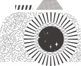
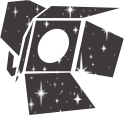
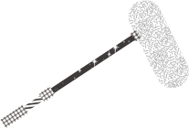
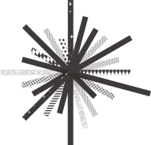
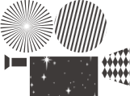
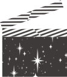
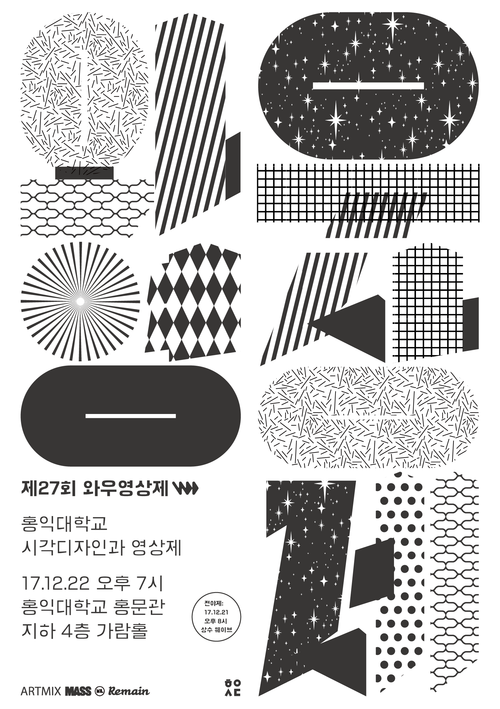

01 기조
2017년도 와우영상제의 기조는 '결'이다. 영상에서의 '결'이란, 창작자 고유의 개성이 각자의 연출로써 짜여져 특정한 질감으로 나타나는 것을 말한다. 물리적인 형태를 가진 모든 물질이 저마다의 결을 갖고 있듯이, 창작자 특유의 결은 수많은 과정을 거쳐 작품 속에서 드러난다. 거칠거나 부드럽고, 투박하거나 정교한 '결'은 각각 다른 모습으로 표현되고, 이런 다양한 결의 영상들이 모여 와우영상제를 이루는 또 다른 결이 된다.
02 공식 포스터
03 전야제
올해 와우영상제(WOWFF: Wow Film Festival)에서는 상영회 전날인 12월 21일 목요일, 전야제(前夜祭)가 열립니다. 와우영상제 사상 최초로 열리는 이번 전야제는, 다음날 상영될 작품들의 티저를 감상하며 감독, 배우, 관객이 다함께 영상제의 시작을 축하하는 자리입니다. 기존의 연사초청 세미나의 다소 일방적이었던 소통을 개선하기 위해, 간단한 다과와 함께 영상 업계에서 활발히 활동중인 분들을 게스트로 초청하여 대화의 장을 마련하고자 합니다. 공간 또한 ‘강연’보다는 ‘대화’에 적합한 보다 오픈된 곳에서 진행될 예정입니다. 제 27회 와우영상제의 포문을 함께 열어주실 분들을 기다리고 있겠습니다.